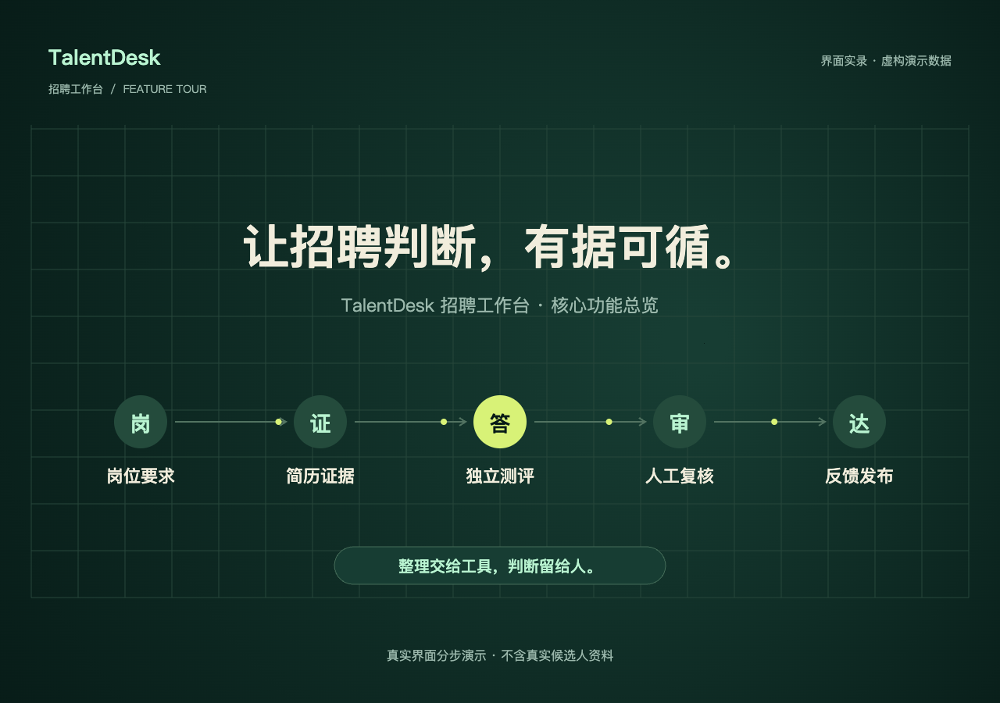
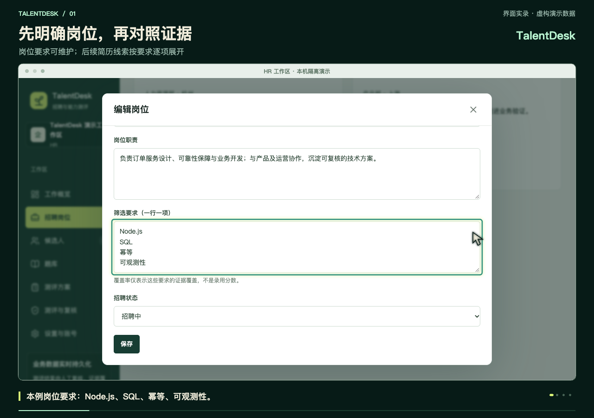
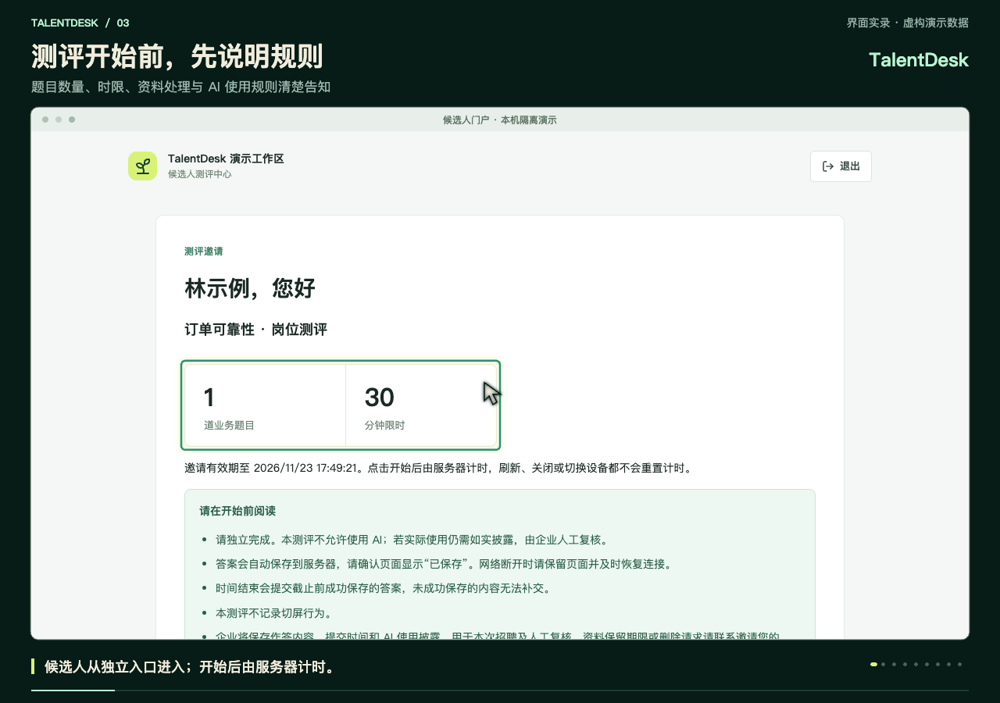
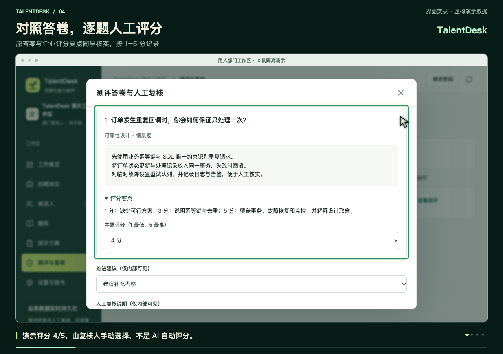
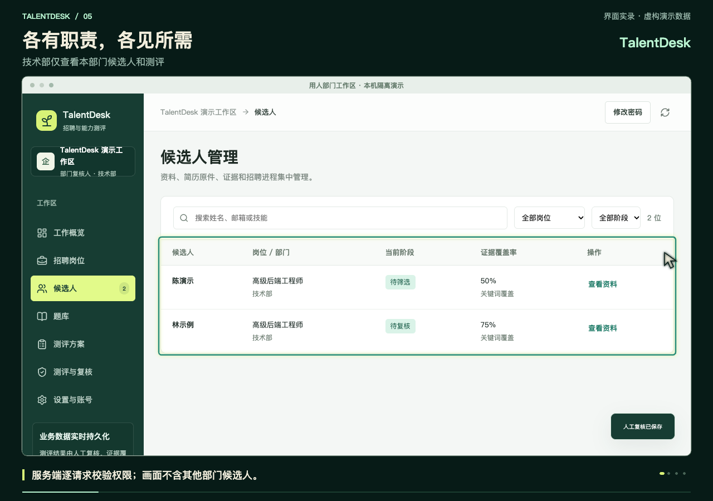

FEATURE TOUR
00TalentDesk 核心功能总览
岗位要求、原文证据、候选人作答、人工复核与反馈，串起一次完整招聘协作。

从岗位要求，到候选人收到人工反馈。用真实工作台界面，展示证据整理、独立测评与角色协作。
岗位要求、原文证据、候选人作答、人工复核与反馈，串起一次完整招聘协作。

逐项对照要求，显示简历原文与未找到的证据，保留核实空间。

规则确认、服务端计时、自动保存、刷新恢复，再到最终提交。

用人部门逐题评分，HR 单独撰写并发布候选人可见反馈。

部门范围、资料访问边界、企业账号和最近操作审计。

一次播放一张动图；点击“暂停并看封面”可停止动画。预览页默认显示静态封面，请按需播放。GIF 文件本身为无限循环。
总览轻量版：960 × 675 · 27.63 秒 · 2.06 MiB，适合聊天分享或网页嵌入。所有功能成片原尺寸为 1280 × 900。
采用真实应用关键状态截图，叠加标题、重点框、光标运动和转场；展示节奏经过剪辑，并非未经剪辑的连续屏幕录制。
全部资料、账号、答卷和评分均为虚构演示；使用隔离临时数据库，未调用外部 AI 或发送邮件。
关键词覆盖率不是录用分；百分制结果来自演示人工评分。可选 AI 仅用于证据整理。本机演示不代表正式环境已经完成上线验收。